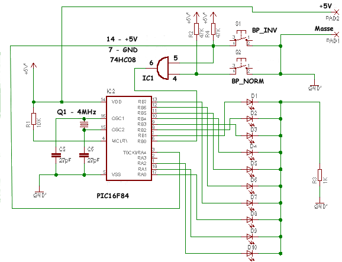

Réaliser un Chenillard à LED
Votre premier montage à microcontrôleur étape par étape, avec un PIC16F84.[cite: 36]
Introduction et Exercice
Un lecteur du site m'avait demandé de réaliser un chenillard de 10 LED avec le moins de composants possible. C'est je pense, un très bon exercice pour apprendre à programmer un microcontrôleur. Ses principaux avantages sont la simplicité et surtout un résultat visuel immédiat des effets de son programme.[cite: 36]
Cahier des charges : Réaliser un chenillard de 10 LED commandé par deux bouton-poussoirs (BP_NORM et BP_INV). L'un des BP fait défiler les LED dans un sens et l'autre dans l'autre sens.[cite: 36]
Nous procéderons par étapes :
- Etape 1 : Réaliser un simple chenillard à LED sans BP (allumage successif 1 à 10).[cite: 36]
- Etape 2 : Chenillard avec un BP. L'action sur le BP provoque le début de défilement.[cite: 36]
- Etape 3 : Une autre action sur le BP arrête le chenillard et éteint toutes les LED.[cite: 36]
- Etape 4 : Réaliser le chenillard fonctionnant suivant le cahier des charges avec un seul BP_NORM (cycle avec arrêt sur la LED suivante).[cite: 36]
- Etape 5 : Montage final avec 2 BP (ordre normal et ordre inverse).[cite: 36]
Choix technologiques
Nous n'utiliserons pas la solution portes logiques. Le nombre de composants serait trop important sur votre plaque d'essais. C'est donc l'occasion d'utiliser un microcontrôleur PIC16F84.[cite: 36]
- Sorties : 10 LED = 10 sorties.[cite: 36]
- Entrées : 2 BP = 2 entrées.[cite: 36]
Soit 12 lignes d'E/S. Le PIC16F84 dispose de 13 lignes et convient donc. Il est cadencé par un quartz à 4 MHz.[cite: 36]
Schéma électrique
?? Télécharger le schéma (chenillard.zip - 12Ko)?? Télécharger le datasheet simplifié (238Ko)

La détection d'une action sur BP_NORM ou BP_INV est réalisée par la porte OU (IC1).[cite: 36] Rappel sur l'état logique de cette porte :
| ENTREE 4 (BP_NORM) | ENTREE 5 (BP_INV) | SORTIE 6 |
|---|---|---|
| 0 | 0 | 0 |
| 0 | 1 | 1 |
| 1 | 1 | 1 |
| 1 | 0 | 1 |
Si la sortie 6 de IC1 génère un front descendant (1 > 0) sur l'entrée RB0 du PIC, cela déclenche une interruption.[cite: 36]
Le programme
?? Télécharger le programme (sources + hex)Il y a autant de manières d'écrire un programme qu'il y a de programmeurs. Voici les principaux registres utilisés :
- TRISA et TRISB : Registres de direction des PORTA et PORTB (0 = sortie, 1 = entrée).[cite: 36]
- INTCON : Gère les interruptions (GIE, T0IE, INTE).[cite: 36]
- OPTION : Sélectionne le diviseur de fréquence pour le Timer0.[cite: 36]
/*********************************************************************
* CHENILLARD V2.00
* Commande de LED suivant un cycle determine et commande de BP
*
********************************************************************/
#include <pic1684.h>
#define INIT_PORTA TRISA = 0b10000; // PortA = RA4=In
#define INIT_PORTB TRISB = 0b00000001; // PortB RB0=In
static bit BP @ ((unsigned)&PORTB*8+0); // BP_NORM et BP_INV SUR RB0
static bit bp_on, temps, bp_inv;
unsigned char nb;
const unsigned int cycle_B[11]={2,4,8,16,32,64,128,0,0,0};
const unsigned int cycle_A[11]={0,0,0,0,0,0,0,1,2,4};
// Voir le fichier source complet dans l'archive .zip pour la suite
// des fonctions main(), traite_int(), et init_pic().